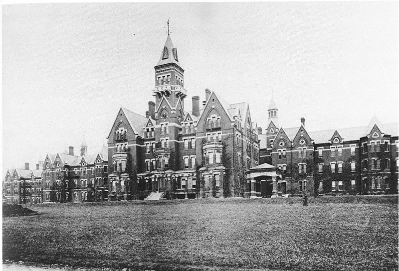
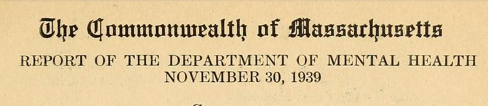
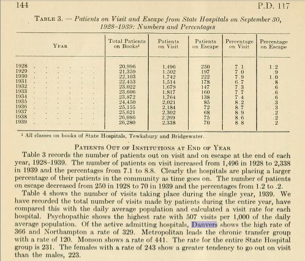

The Place: Danvers State Hospital
{kind=link}
With a presence in Batman comics and two popular video games, Arkham Asylum represents one of the most famous mental institutions in popular culture. As such, it represents a unique opportunity to investigate the history of asylums in America. Arkham fist appeared in Batman in 1974, but it has its own interesting history within popular culture as it appears to be a reference to a fictional city (and sanitarium) created by the horror writer H.P. Lovecraft in his stories written in the 1920s and 30s including "The Thing on the Doorstep" and "The Colour Out of Space". Massachussetts contained multiple institutions for the mentally ill, but the impressive and imposing Danvers State Hospital is often cited as the inspiration for Lovecraft's Arkham Sanitarium.
The Source: 1939 Report from the Massachusetts Department of Mental Health
{kind=link}
I found this source via Archive.org after searching for "Danvers State Hospital". It is an 1939 report for the Massachusetts Department of Mental Health, which is interesting because it comes from the same time period as Lovecraft's stories. Government reports, when read carefully, often provide important clues into the assumptions and beliefs of the officials who administer the asylums.
Digging Deeper: Visits and Escapes
{kind=link}
I searched the document for mentions of Danvers and came across this section of "Visits" — in this case meaning patients being allowed to visit for short stays away from the asylum. It contains an interesting table of data that tracks how common these visits were for all the institutions in Massachusetts. Notice that Danvers has the highest rate of visits in the state for admitting hospitals meaning at the very least it was not quite the high-security prison presented in Batman. What is also fascinating to me is the fact that "visits" and "escapes" are listed in the same table. It suggests that those compiling the data saw a connection between inmates being allowed to leave and inmates trying to escape. I'd like to learn more about what these officials thought the connection might be but at the very least it suggests more complex ideas about the confinement of the mentally ill than I previously considered.